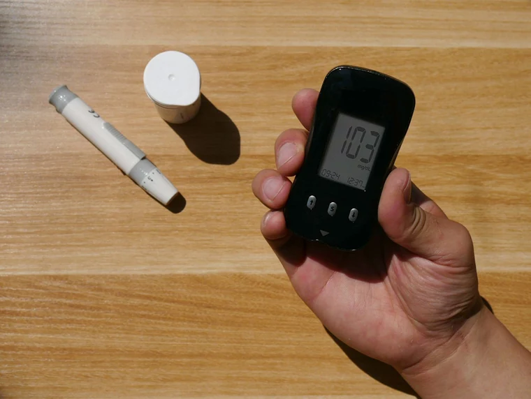
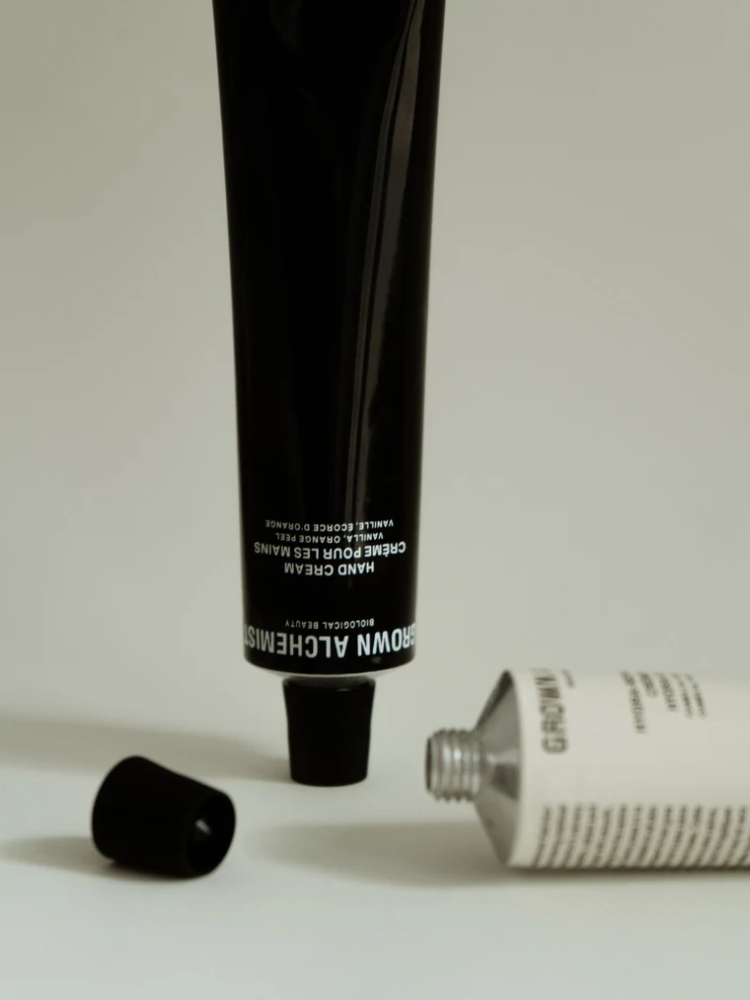
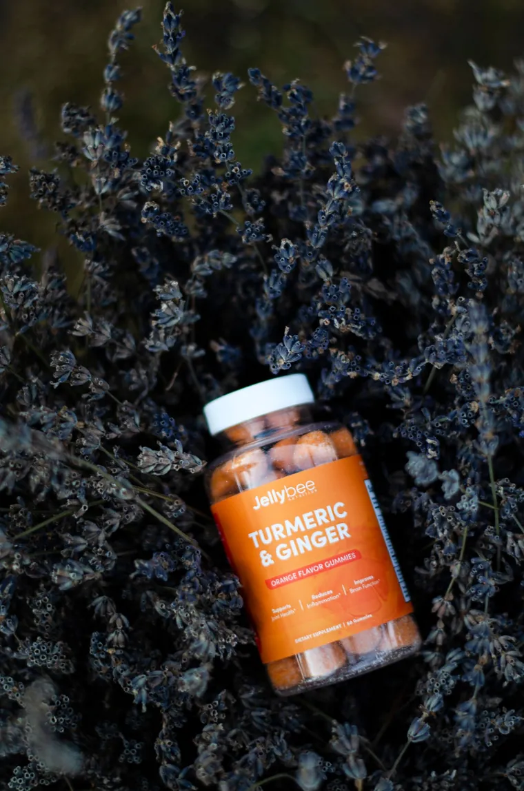
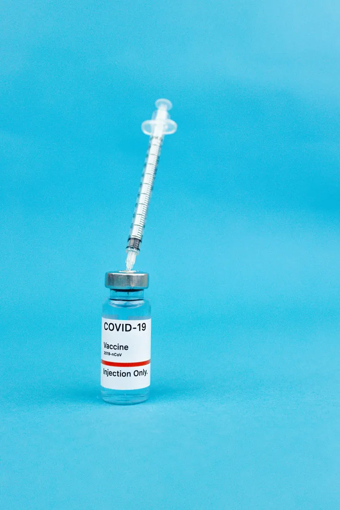

Why your breakfast decides how your blood sugar behaves at 4 PM
A pharmacist's view of glycaemic spikes, and the two swaps that flatten them without changing what you eat at home.
Read more
Everything here is written or fact-checked by a registered pharmacist at Stackly. No hype, no miracle claims, and no advice that contradicts what your doctor told you.
Around 70% of the dispensing errors we used to see came down to one of five things: a duplicated molecule, a missed interaction, a dose that did not suit the patient, an expired pack, or a medicine that had been stored wrong. Each one is caught by a routine that takes under two minutes.
Dr. Anita Varghese, PharmD
14 September 2026
Each desk is written by a pharmacist who works that part of the counter every day.
Showing 6 articles
A pharmacist's view of glycaemic spikes, and the two swaps that flatten them without changing what you eat at home.

LDL, HDL, triglycerides, ratios. What each number means, which ones matter, and when a repeat test is actually needed.

How stability testing works, why companies print conservative dates, and the three exceptions where you should never push it.

St. John's wort, ashwagandha, ginseng and green tea extract all interact with common prescription drugs. Here is the list we screen for.
Waking at 3 AM is usually a sleep-cycle problem, not a supplement problem. What to try before you try buying something.

The rainy season brings three different fevers. A short, practical checklist for households, offices and school runs.
Ranked by completed reads, not page views. Every article here has been reviewed " by one of our registered pharmacists.
One email a week. Three things worth knowing, written by a pharmacist, no product pushing.
No spam. Unsubscribe in one click.
Every article is signed by the pharmacist who reviewed it, with registration details available on request.
Nineteen years in community practice. Reviews every medication-safety article we publish.
Runs our chronic-care clinics and writes about diabetes, blood pressure and lipids.
Runs the dispensary at our Chinna Thirupathi store. Wrote the monsoon fever checklist.
Three things worth knowing, one thing worth discarding, and a seasonal warning if the weather turns. Read by 12,400 people in the city. Written by us, not generated.
Join 12,438 subscribers · Unsubscribe anytime
Bring your question, your prescription or a list of the nine things in your bathroom cabinet. We will tell you what to keep, what to stop and what to ask your doctor.